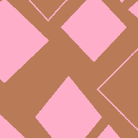

My gallery of paint art:

For the last web site assignment for this unit, I had to make a image sharing site that fetch data from a data base. For fun I designed and created eleven simple art works on paint to be place holders on my site.
Here are the master pieces I created.